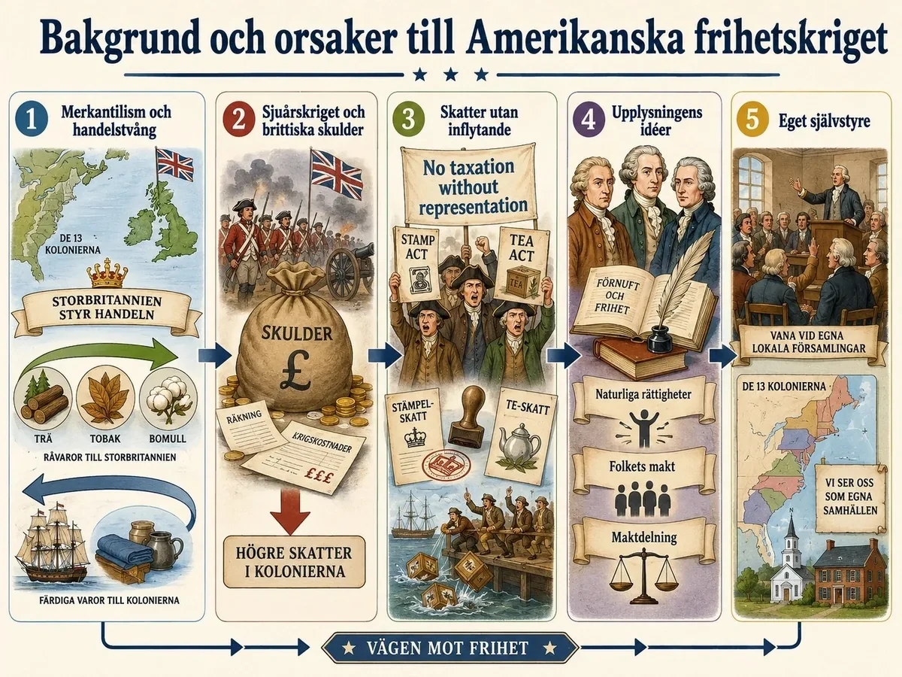
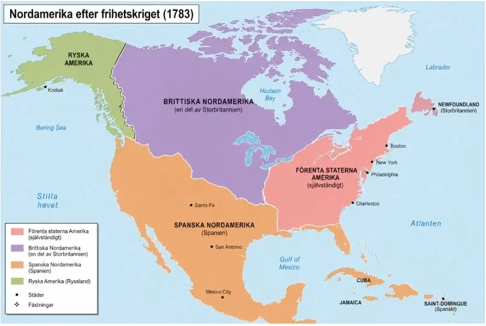
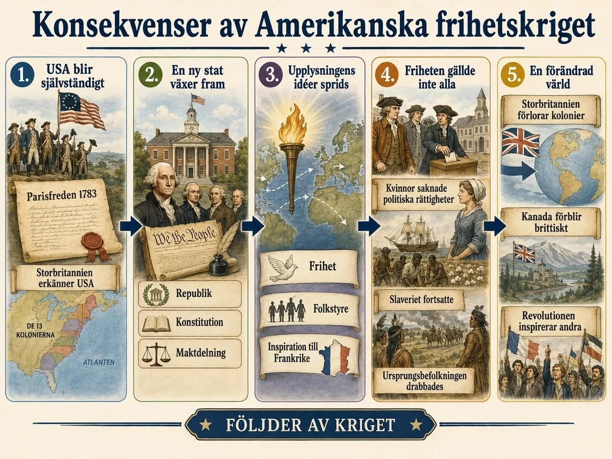

— när upplysningens idéer blev en ny nation —
Amerikanska frihetskriget var ett krig mellan Storbritannien och dess tretton kolonier i Nordamerika. Det pågick från 1775 till 1783. Kolonisterna ville bryta sig loss och skapa ett eget land: USA.
Varför blev de så missnöjda? Det fanns två stora orsaker.
Handeln. Storbritannien styrde kolonierna med ett system som hette merkantilism. Kolonierna skulle sälja billiga råvaror till Storbritannien och köpa dyra färdiga varor tillbaka. De fick inte handla fritt med andra länder. Det tyckte kolonisterna var orättvist.
Skatterna. Efter Sjuårskriget hade Storbritannien stora skulder. Därför höjde man skatterna på kolonierna, till exempel med Stamp Act. Men kolonisterna hade inga representanter i det brittiska parlamentet. De tyckte inte att man skulle betala skatt om man inte fick vara med och bestämma. Deras slagord blev: ingen beskattning utan representation.

Amerikanska frihetskriget var ett krig mellan Storbritannien och de tretton brittiska kolonierna i Nordamerika. Kriget pågick mellan åren 1775 och 1783. Det handlade om att kolonisterna ville bryta sig loss från Storbritannien och skapa ett eget land: USA. Men kriget handlade inte bara om vem som skulle kontrollera marken i Nordamerika. Det handlade också om idéer, makt, skatter, handel och rätten att få vara med och bestämma.
En viktig orsak till konflikten var Storbritanniens ekonomiska politik. Storbritannien styrde sina kolonier enligt ett system som kallas merkantilism. Det betydde att kolonierna skulle hjälpa moderlandet att bli rikt. Kolonierna skulle sälja råvaror, till exempel trä, tobak och bomull, till Storbritannien. Sedan skulle de köpa färdiga varor från Storbritannien. På så sätt tjänade Storbritannien pengar både på råvarorna och på de färdiga produkterna.
Kolonisterna var missnöjda med detta. De fick inte handla fritt med vilka länder de ville, och deras handel styrdes av brittiska lagar. En sådan lag var Navigation Acts, som bestämde att många varor skulle fraktas på brittiska fartyg och gå via Storbritannien. Det gjorde handeln dyrare och begränsade koloniernas frihet.
Efter Sjuårskriget hade Storbritannien dessutom stora skulder. Den brittiska staten ville därför att kolonierna skulle betala mer skatt. En av de nya skatterna var Stamp Act, stämpelskatten från 1765, som krävde att tryckta dokument i kolonierna måste ha en betald stämpel. Kolonisterna protesterade, eftersom de inte hade några representanter i det brittiska parlamentet. De menade att det var orättvist att behöva betala skatt utan att få vara med och bestämma. Deras slagord blev: no taxation without representation — ingen beskattning utan representation.
Amerikanska frihetskriget började inte som en kamp för frihet och höga ideal. Det började som en gräl om pengar, handel och skatter. Det intressanta — och det som gör orsakerna värda att förstå på djupet — är hur en rad ganska vardagliga ekonomiska klagomål steg för steg förvandlades till en principiell strid om rättigheter och makt. Det var när missnöjet slutade handla om hur mycket och började handla om vem som har rätt att bestämma som en skattekonflikt blev en revolution.
Merkantilismens logik. Grunden var det ekonomiska system som kallas merkantilism. Enligt det fanns en bestämd mängd rikedom i världen, och ett land blev mäktigt genom att lägga beslag på så stor del som möjligt. Kolonierna var i det systemet inte till för sin egen skull, utan för moderlandets: de skulle leverera billiga råvaror — trä, tobak, bomull — och köpa dyra färdigvaror tillbaka. Storbritannien tjänade alltså i båda ändar. Lagar som Navigation Acts låste fast handeln: vissa varor fick bara skeppas på brittiska fartyg och måste gå via Storbritannien, även när kolonisterna kunde ha gjort bättre affärer med andra. Så länge kolonierna var små och beroende accepterades detta, om än motvilligt. Men kolonierna växte, blev rikare och alltmer självmedvetna — och kände systemet som en tvångströja.
Skulderna från Sjuårskriget — den tändande gnistan. Det som gjorde konflikten akut var något du redan känner till: Sjuårskriget. Storbritannien hade vunnit, men segern hade kostat enormt och lämnat staten med väldiga skulder. Ur brittisk synvinkel var slutsatsen självklar. Kriget hade delvis förts för att skydda kolonierna mot Frankrike, alltså borde kolonierna nu vara med och betala. Så kom en rad nya skatter, bland dem Stamp Act 1765, som krävde en betald stämpel på tryckta dokument. För London var det en rimlig räkning för ett gemensamt krig. För kolonisterna var det något helt annat.
Vändningen: från plånbok till princip. Här skedde det avgörande. Kolonisterna protesterade inte främst för att skatten var hög, utan för att den var orättvis i grunden. De hade inga egna representanter i det brittiska parlamentet — och ändå skulle detta parlament få beskatta dem. Ur den insikten föddes slagordet no taxation without representation: ingen beskattning utan representation. Det låter som en fras om skatt, men det är i själva verket en fras om makt. Den säger att en regering inte har rätt att bestämma över människor som inte fått vara med och välja den. En ekonomisk klagovisa hade förvandlats till en fråga om samtycke och rättigheter — och just den frågan var det som gjorde konflikten omöjlig att lösa med några få skattelättnader.
Det är därför orsakerna hänger ihop som en kedja. Merkantilismen skapade ett ständigt gnisslande missnöje med handeln. Sjuårskrigets skulder tvingade fram nya skatter som gjorde missnöjet akut. Och kravet på representation gjorde det till en principfråga som inte gick att köpa sig fri från. När konflikten väl formulerats som en fråga om rättigheter var scenen färdig för nästa steg: att kolonisterna började söka språk och argument för sin sak — och det språket fann de i upplysningens idéer, som du möter i nästa del.
Kolonisterna behövde inte bara vara arga — de behövde ord för varför de hade rätt. De orden fann de hos upplysningens filosofer.
John Locke sa att alla människor föds med rättigheter: liv, frihet och egendom. Om en stat kränker dem har folket rätt att göra uppror. Det blev kolonisternas viktigaste argument.
Montesquieu sa att makten ska delas — mellan de som stiftar lagar, de som styr och de som dömer. Så att ingen får för mycket makt.
Voltaire kämpade för yttrandefrihet och religionsfrihet: att få tänka och tro fritt.
Rousseau sa att makten ska komma från folket.
Tillsammans gav idéerna kolonisterna ett starkt argument: vi gör inte uppror för att vi är bråkiga, utan för att våra rättigheter hotas.
Konflikten påverkades också av upplysningens idéer. Under 1700-talet började flera filosofer ifrågasätta gamla sätt att styra samhällen. De kritiserade envälde, orättvisa privilegier och tanken att människor bara skulle lyda kungar och kyrkliga auktoriteter. I stället betonade de förnuft, frihet, rättigheter och folkets möjlighet att påverka samhället. Flera kolonister i Nordamerika inspirerades av tänkare som John Locke, Montesquieu, Voltaire och Rousseau.
John Locke menade att alla människor har naturliga rättigheter, till exempel rätten till liv, frihet och egendom. Dessa rättigheter fanns enligt Locke redan från början och var inte något som kungen eller staten kunde ge eller ta bort hur som helst. Staten hade därför som viktigaste uppgift att skydda människors rättigheter. Om staten misslyckades med detta, eller själv började förtrycka folket, hade folket rätt att göra motstånd och till och med göra uppror. För kolonisterna blev detta en viktig tanke. De kunde hävda att Storbritannien inte längre skyddade deras frihet, utan styrde dem orättvist genom skatter och lagar utan deras samtycke.
Montesquieu skrev om maktdelning. Han menade att makten i ett samhälle inte borde samlas hos en enda person, till exempel en kung. I stället borde makten delas upp mellan olika delar av staten. En del skulle stifta lagar, en annan skulle styra landet och en tredje skulle döma efter lagarna. Syftet var att förhindra maktmissbruk. Om makten delades upp kunde olika delar av staten kontrollera varandra. Denna idé blev viktig när USA senare skapade sitt politiska system.
Voltaire betonade särskilt yttrandefrihet och religionsfrihet. Han menade att människor måste få tänka, skriva och tala fritt, även när deras åsikter kritiserar makthavare, kyrkan eller gamla traditioner. Han kritiserade censur och religiös intolerans, alltså när människor förföljs eller straffas för sina tankar, sin tro eller sina åsikter. För kolonisterna blev Voltaires idéer viktiga eftersom de stärkte tanken att människor inte bara skulle lyda överheten. De skulle också ha rätt att diskutera, protestera och kritisera orättvisor. Idén om religionsfrihet passade också in i kolonierna, där det fanns olika religiösa grupper som inte ville styras av en enda statskyrka.
Rousseau betonade att makten ytterst ska komma från folket. Han menade att ett samhälle bygger på ett slags samhällskontrakt, där människor går samman och skapar en gemenskap. Staten ska därför inte styra för kungens eller elitens skull, utan för folkets bästa. Denna tanke stärkte kolonisternas uppfattning att de själva borde få bestämma över sina samhällen. Om makten kommer från folket, borde lagar och skatter inte beslutas långt borta i London utan kolonisternas inflytande.
Tillsammans gav dessa upplysningsidéer kolonisterna ett starkt ideologiskt stöd. Konflikten med Storbritannien handlade därför inte bara om skatter och handel. Den handlade också om större frågor: Vem har rätt att styra? Vilka rättigheter har människor? Får folket göra motstånd mot en orättvis stat? Och ska ett samhälle bygga på kunglig makt eller på medborgarnas frihet och inflytande?
Dessa idéer gjorde att många kolonister började se det brittiska styret som orättvist. De ville inte längre bara protestera mot skatter och handelslagar. De började kräva självständighet.
Kolonisternas klagomål på skatter och handel hade kunnat sluta i några bittra protester och sedan rinna ut i sanden. Det som gjorde skillnaden var att kolonisterna hittade ett språk för sin sak — ett sätt att förvandla "vi är missnöjda" till "vi har rätt". Det språket kom från upplysningen, och det är därför idéerna förtjänar en egen del: de var inte dekoration ovanpå revolutionen, de var dess vapen.
Locke — rätten att göra uppror. Den mest användbara tänkaren för kolonisterna var John Locke. Han hade hävdat att människor föds med naturliga rättigheter till liv, frihet och egendom, att staten finns till för att skydda dessa rättigheter, och — det avgörande — att folket har rätt att göra motstånd om staten i stället kränker dem. För en koloni som ville motivera uppror var detta guld värt. Nu kunde kolonisterna säga att de inte gjorde revolt av trots eller egennytta, utan för att försvara rättigheter som Storbritannien självt hade svikit. Locke gjorde upproret legitimt.
Montesquieu — en ritning för framtiden. Där Locke gav rätten att riva ner det gamla, gav Montesquieu en ritning för vad man skulle bygga i stället. Hans idé om maktdelning — att den lagstiftande, verkställande och dömande makten skulle hållas åtskilda och kontrollera varandra — blev en direkt förlaga när kolonierna senare skulle utforma sitt eget statsskick. Poängen var att aldrig igen låta makten samlas hos en enda kung. Hur den idén blev en verklig konstitution kan du läsa i djupdykningen Montesquieu och konstitutionen.
Voltaire och Rousseau — frihet och folk. Voltaire bidrog med kravet på yttrande- och religionsfrihet: rätten att tänka, tala och tro utan att straffas. Rousseau bidrog med den mest radikala tanken av alla — att makten ytterst måste komma från folket, och att ett samhälle vilar på ett kontrakt mellan stat och medborgare. Tillsammans pekade de mot något som ännu inte fanns någonstans: en stat utan kung, byggd på medborgarnas samtycke.
Det avgörande är att kolonisterna inte uppfann dessa idéer — de lånade dem, och riktade dem mot Storbritannien. En skattekonflikt hade därmed blivit något mycket större: ett test av om upplysningens idéer faktiskt gick att förverkliga. När kolonisterna 1776 skrev sin självständighetsförklaring var det inte längre bara ett uppror mot skatter. Det var ett försök att bygga ett land på en idé — och det är därför den här delen är hjärtat i hela avsnittet.
År 1773 kom en berömd protest: Boston Tea Party. Kolonister kastade brittiskt te i havet — inte för att de hatade te, utan för att visa att de inte accepterade brittiska skatter.
År 1775 bröt kriget ut. Kolonisterna byggde en armé och George Washington blev ledare.
År 1776 skrev de Självständighetsförklaringen (till stor del av Thomas Jefferson). Den sa att kolonierna var ett eget land, och att alla människor har rättigheter.
Kriget vände vid Saratoga 1777 — då gick Frankrike med på kolonisternas sida. Den sista stora segern kom vid Yorktown 1781. År 1783 slöts fred i Paris, och USA blev självständigt.

En viktig händelse före kriget var Boston Tea Party år 1773. Storbritannien hade infört en lag som gav det brittiska ostindiska kompaniet rätt att sälja te direkt till kolonierna. Även om teet blev billigare fanns det fortfarande en skatt kvar på teet. För kolonisterna blev skatten en symbol för Storbritanniens kontroll.
Som protest gick en grupp kolonister, kallade Sons of Liberty, ombord på brittiska fartyg i Bostons hamn och kastade 342 lådor te i vattnet. Händelsen gjorde Storbritannien rasande. Britterna svarade med hårda strafflagar, de så kallade Intolerable Acts. Bland annat stängdes Bostons hamn och koloniernas självstyre begränsades. Det gjorde att konflikten blev ännu starkare.
År 1775 bröt kriget ut. Kolonisterna organiserade en armé, och George Washington blev ledare för den amerikanska armén. Storbritannien var egentligen mycket starkare militärt. De hade bättre utbildade soldater, större resurser och en stark flotta. Men britterna hade också problem. Kriget fördes långt hemifrån, på andra sidan Atlanten. Det var svårt att skicka soldater, vapen och mat över havet. Dessutom var Nordamerika stort, och det var svårt för britterna att kontrollera alla områden.
År 1776 antog kolonierna Självständighetsförklaringen. Den skrevs till stor del av Thomas Jefferson och blev ett av de viktigaste dokumenten under Amerikanska frihetskriget. I texten förklarade kolonierna att de inte längre ville tillhöra Storbritannien, utan att de såg sig som fria och självständiga stater. Det innebar att de inte längre erkände den brittiske kungens rätt att styra över dem.
Självständighetsförklaringen byggde tydligt på upplysningens idéer. Den slog fast att människor har vissa grundläggande rättigheter som staten inte får ta ifrån dem. I texten nämndes bland annat rätten till liv, frihet och strävan efter lycka. Det betydde att människor inte bara skulle ses som undersåtar som lydde en kung, utan som individer med egna rättigheter.
Texten förklarade också varför kolonisterna ansåg att de hade rätt att göra uppror. Enligt Självständighetsförklaringen ska en regering skydda folkets rättigheter. Om en regering i stället förtrycker folket, missbrukar sin makt eller styr utan folkets samtycke, har folket rätt att förändra eller avskaffa den regeringen. Kolonisterna menade att Storbritannien hade gjort just detta genom att införa skatter, begränsa koloniernas självstyre och använda militär makt mot dem.
En stor del av dokumentet bestod därför av en lista över klagomål mot den brittiske kungen, George III. Kolonisterna anklagade honom för att ha styrt orättvist, stoppat koloniernas politiska inflytande och brutit mot deras friheter. På så sätt blev Självständighetsförklaringen både en politisk förklaring och ett försvarstal: kolonierna ville visa världen varför deras uppror var rättfärdigt.
En viktig vändpunkt i kriget kom vid slaget vid Saratoga år 1777. Där vann kolonisterna en viktig seger mot britterna. Segern gjorde att Frankrike vågade gå in i kriget på kolonisternas sida. Frankrikes stöd blev mycket viktigt, eftersom kolonisterna fick hjälp med soldater, pengar, vapen och flottstyrkor. Även Spanien och Nederländerna gav stöd mot Storbritannien.
Den avgörande segern kom vid Yorktown år 1781. Där lyckades amerikanska och franska styrkor omringa en brittisk armé. Britterna tvingades ge upp, och efter detta blev det tydligt att Storbritannien inte kunde vinna kriget.
Kriget avslutades formellt år 1783 genom Parisfreden. Då erkände Storbritannien koloniernas självständighet. De tretton kolonierna blev nu ett nytt land: Amerikas förenta stater, eller USA.
När kriget bröt ut 1775 borde Storbritannien ha vunnit snabbt. Det var ett av världens mäktigaste imperier med en professionell armé och en överlägsen flotta; kolonisterna hade ingen färdig stat, ingen stark regering och en armé som ofta saknade mat, skor och ammunition. Att kriget ändå slutade med brittiskt nederlag beror på några få avgörande faktorer — och på att kriget aldrig bara handlade om slagfältet.
Ett ord blev ett land. Den viktigaste händelsen var kanske inte ett slag alls, utan ett dokument. År 1776 antog kolonierna Självständighetsförklaringen, till stor del skriven av Thomas Jefferson. Den gjorde två saker på en gång. Dels förklarade den att kolonierna inte längre tillhörde Storbritannien. Dels gav den upproret en idé: att människor har rättigheter, att en regering bara är legitim om den skyddar dem, och att folket får avskaffa en regering som blir förtryckande. Därmed var kriget inte längre ett gräl inom imperiet, utan en kamp mellan två helt olika sätt att se på makt. Det gjorde det också omöjligt att kompromissa sig tillbaka till hur det varit.
Vändpunkten och fransmännen. Militärt var Washingtons främsta bedrift inte att vinna stora slag — det gjorde han sällan — utan att hålla armén vid liv, för så länge den fanns kunde revolutionen fortsätta. Den verkliga vändpunkten kom 1777 vid Saratoga, där en hel brittisk armé tvingades kapitulera. Betydelsen låg mindre i själva segern än i vad den övertygade omvärlden om: att amerikanerna faktiskt kunde vinna. Det fick Frankrike att gå in i kriget på kolonisternas sida — dels för att hämnas nederlaget i Sjuårskriget, dels för att skada sin gamla rival. Det franska stödet, inte minst flottan, blev avgörande. Vid Yorktown 1781 spärrade den franska flottan vägen för brittiska förstärkningar medan amerikanska och franska styrkor omringade general Cornwallis, som tvingades kapitulera. År 1783 erkände Storbritannien USA:s självständighet i Parisfreden.
Det är värt att stanna vid en sak som lätt glöms: USA vann inte ensamt. Utan franskt stöd hade kriget varit mycket svårare, kanske omöjligt, att vinna — och Frankrikes insats skulle dessutom få ödesdigra följder för landet självt, något som pekar rakt fram mot nästa kapitel. Hela krigets gång, från de första skotten till Yorktown, finns i djupdykningen Hur tretton kolonier besegrade ett imperium; vägen dit, från protest till väpnat uppror, i Vägen mot frihetskriget.
Den viktigaste följden var att USA bildades — ett helt nytt land. Det byggdes på en ny idé: makten skulle inte samlas hos en kung, utan delas, och komma från folket.
Men friheten hade gränser. Slaveriet fanns kvar. Kvinnor fick inte politiska rättigheter. Ursprungsbefolkningen drabbades hårt när landet växte västerut. Alla räknades alltså inte som lika mycket värda i praktiken.
För Storbritannien betydde kriget att de förlorade sina tretton kolonier.
Men revolutionen fick också betydelse långt utanför Nordamerika. Den visade att det gick att göra uppror mot en kung och bygga ett samhälle på upplysningens idéer. Det inspirerade andra — inte minst i Frankrike, bara några år senare.

Den viktigaste konsekvensen av Amerikanska frihetskriget var att USA bildades. De tretton kolonierna blev självständiga från Storbritannien och skapade en egen stat. USA blev ett av de första moderna länderna som byggde sitt politiska system på upplysningens idéer om folkstyre, maktdelning och individuella rättigheter.
Det nya landet försökte skapa ett styrelseskick där makten inte skulle samlas hos en kung. I stället delades makten mellan olika delar av staten. Detta byggde på Montesquieus idé om maktdelning. USA fick också en konstitution, alltså en grundlag, som skulle bestämma hur landet skulle styras.
Men det är viktigt att förstå att den amerikanska demokratin hade stora begränsningar. När man talade om frihet och rättigheter gällde det framför allt vita män. Kvinnor hade inte samma politiska rättigheter. Slavar hade inga friheter, trots att Självständighetsförklaringen talade om att alla människor är skapade lika. Ursprungsbefolkningen drabbades också hårt när USA växte och tog mer mark i Nordamerika.
För Storbritannien innebar kriget att landet förlorade sina tretton kolonier. Däremot behöll Storbritannien kontrollen över sina nordliga kolonier, som senare utvecklades till Kanada. Storbritannien fortsatte också att vara ett mäktigt imperium på andra platser i världen.
Amerikanska frihetskriget fick också stor betydelse utanför Nordamerika. Revolutionen visade att det gick att göra uppror mot ett mäktigt imperium och skapa ett nytt land byggt på idéer om frihet och rättigheter. Detta inspirerade människor i andra delar av världen, särskilt i Frankrike. Några år senare bröt Franska revolutionen ut, och även där spelade idéer om frihet, jämlikhet och folkets makt en viktig roll.
Amerikanska frihetskriget blev därför både början på USA:s historia som självständig stat och en viktig del av den större förändring som pågick i världen under 1700-talet. Gamla tankar om kungamakt, imperier och lydnad började ifrågasättas. Nya idéer om medborgare, rättigheter och demokrati fick allt större betydelse.
Amerikanska frihetskrigets viktigaste följd var inte att en armé besegrades, utan att något helt nytt föddes: en stat byggd medvetet på idéer i stället för på en kungaätt eller en gammal tradition. Men samma revolution som proklamerade att alla människor är lika visade också, mycket tydligt, hur långt 1700-talets frihetsideal räckte — och var de tog slut.
En ny sorts stat. Det nya USA försökte bygga ett styrelseskick där makten inte kunde samlas hos en enda person. I stället delades den — mellan olika delar av staten som skulle kontrollera varandra — och den skulle ytterst komma från folket. Här ser man upplysningens idéer bli praktisk politik: Lockes tanke att makten vilar på folkets samtycke, och Montesquieus maktdelning, byggdes in i själva statens konstruktion. Det var första gången ett stort land grundades på det sättet, och det blev en förebild långt utanför Nordamerika. Hur maktdelningen konkret utformades kan du läsa i djupdykningen Montesquieu och konstitutionen.
Frihetens gränser. Men den amerikanska friheten var från början ojämnt fördelad. Självständighetsförklaringen slog fast att människor har rättigheter — men i praktiken gällde de inte alla. Slaveriet fanns kvar, och en stor del av det nya landets ekonomi byggde på förslavade människors arbete. Kvinnor fick inga politiska rättigheter. Ursprungsbefolkningen drabbades hårt när det nya landet började expandera västerut. Ett land som grundats på orden "alla människor är lika" byggdes alltså samtidigt på djup ojämlikhet. Den motsägelsen är inte en detalj i historien — den är en av dess viktigaste lärdomar, och den utforskas vidare i djupdykningen Frihetens gräns — slaveriet.
Varför det ändå betydde något. Trots begränsningarna var revolutionen en vändpunkt. Den visade att det gick att göra uppror mot en kung och bygga ett samhälle på upplysningens idéer om rättigheter, folkstyre och maktdelning. Och de vackra orden i självständighetsförklaringen skulle visa sig svårare att begränsa än grundarna tänkt sig: senare generationer — slavmotståndare, kvinnorörelser, medborgarrättskämpar — kunde peka på "alla människor är lika" och kräva att det skulle gälla på riktigt. Revolutionen var därför både ett stort steg mot modern demokrati och ett exempel på dess ofullständighet. Och dess omedelbara eko hördes tydligast i Frankrike, där man bara några år senare skulle driva samma idéer ännu längre — och ännu blodigare.
Laddar övningskort…
Laddar frågor ...